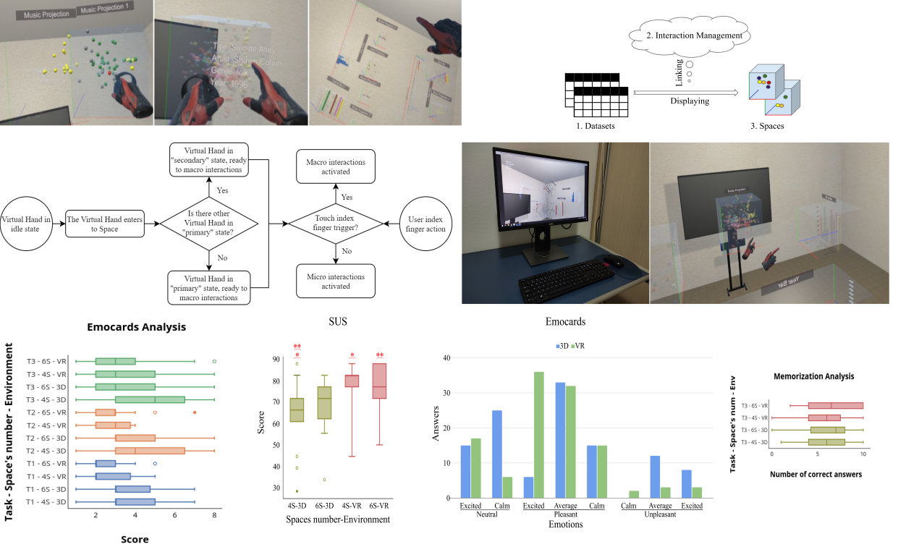
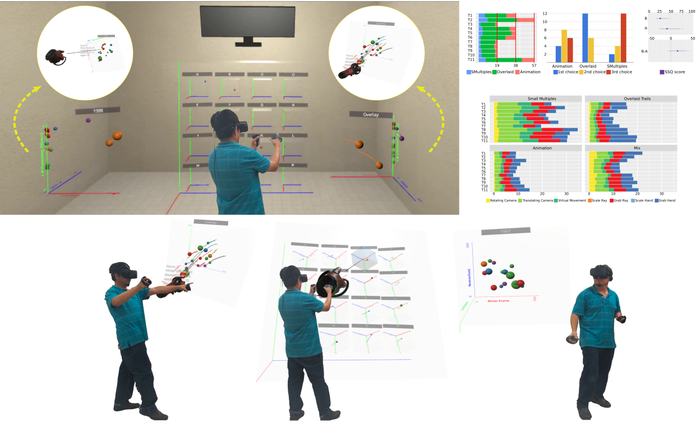

|  |
An Immersive Approach based on Two Levels of Interaction for Exploring Multiple Coordinated 3D Views Carlos Quijano-Chavez, Luciana Nedel, and Carla M.D.S. FreitasIFIP Conference on Human-Computer Interaction - INTERACT 2021 (Springer International Publishing) Accepted [Paper] [Github Code] [Demo Video] |
|  |
Comparing Scatterplot Variants for Temporal Trends Visualization in Immersive Virtual Environments Carlos Quijano-Chavez, Luciana Nedel, and Carla M.D.S. FreitasIEEE Transactions on Visualization and Computer Graphics (Proc. IEEE TVCG 2021) Under Review [Paper] [Github Code] [Demo Video] |